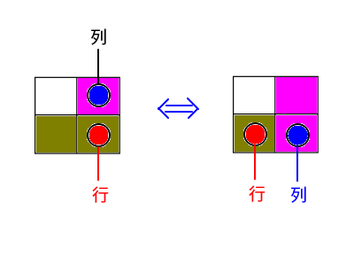

开了个大坑，看看什么时候能填完。
AGC001
[2019.07.12]
ABCDEFAGC002
[2019.07.14]
ABCDEFAGC035
[2019.07.14]
ABCDEF
D. Add And Remove (DP / DFS)
Description
有一个长度为 $N$ 的序列，你每次可以选取其中三个相邻元素 $x_{p-1},x_p,x_{p+1}$，将 $x_{p-1},x_{p+1}$ 都加上 $x_p$ ，然后把 $x_p$ 删去。问最后剩下的两个数之和的最小值是多少。
数据范围：$2\leq N\leq18,0\leq x_i\leq 10^9$
Solution
第一反应：$N\leq 18$ ，这个数据范围太诡异了！这么小范围的问题很有可能用一些稍加技巧的指数级递归就可以解决了，比如说 BZOJ1024 这道题。
对应到这道题上，直接暴力会是 $\Theta(N!)$ 的复杂度，是无法通过的。这就需要我们的一些观察了。我们按照相反的方向考虑问题，不考虑删除数，而考虑添加数的过程。即一开始有数列中只有两个数，我们不断往数列中相邻两数之间添加新的数。可是如何计算和的贡献呢？我们引入权重的概念。开始两个数的权重均为 1，而假如我在权重分别为 $w_i,w_{i+1}$ 的两数 $x_i,x_{i+1}$ 之间插入一个新的数 $y$ ，那么和的贡献就会增加 $(w_i + w_{i+1}) \cdot y$ ，而 $y$ 的权重则会是 $w_i+w_{i+1}$ 。
由此我们可以设计一个区间 dp。令 dp[l][r][wl][wr] 表示向 $x_{l-1},x_{r+1}$ 之间填充 $x_l,\ldots,x_r$ 这些数，并且 $x_{l-1}$ 的权重是 $wl$ ，$x_{r+1}$ 的权重是 $wr$ ，此时的最小代价。那么我们可以通过枚举中间最先生成的数从而实现递推。具体地：
$$
dp[l][r][wl][wr] = \min_{l \leq m \leq r} dp[l][m-1][wl][wl+wr] + dp[m+1][r][wl+wr][wr] + x_m \cdots (wl+wr)
$$
分析可知这是一个 $O(2^n \cdot poly(n))$ 的做法，需要小心实现。但事实上我们直接暴力递归，不加记忆化即可通过此题，因为这么做是 $O(3^n)$ 的。分析如下：
设区间长度为 $k$ 时的复杂度为 $T(k)$ ，则：
$$
\begin{aligned}
T(n) &= 1 + 2\cdot (T(n-1)+T(n-2)+\ldots+T(1)) \\
&= O(3^{n-1})
\end{aligned}
$$
Code
1 | /* |
F. Two Histograms (思维，容斥原理)
Description
你有一个 $N$ 行、$M$ 列的、每个格子都填写着 0 的表格。你进行了下面的操作：
- 对于每一行 $i$ ，选定自然数 $r_i$ （$0\leq r_i\leq M$），将这一行最左边的 $r_i$ 个格子中的数 +1.
- 对于每一列 $i$ ，选定自然数 $c_i$ （$0\leq c_i\leq N$），将这一列最上边的 $c_i$ 个格子中的数 +1.
这样，根据你选定的 $r_1,r_2,\ldots,r_N,c_1,c_2,\ldots,c_M$ ，你就得到了一个每个格子要么是 0，要么是 1，要么是 2 的一个最终的表格。问本质不同的最终表格有多少种。两个表格本质不同当且进当它们有一个对应格子中的数不同。
数据范围：$1\leq N,M \leq 5\cdot 10^5$
Solution
如果对 $r$ 和 $c$ 不加限制，考虑什么时候会出现数重复的现象。不妨假设我们在第 $i$ 行第 $r_i$ 列的位置放一个红色棋子，而在第 $i$ 列第 $c_i$ 行的位置放一个白色棋子。那么如果出现了白色棋子正下方刚好有一个红色棋子的情况时，我们就可以将红色棋子向左移动一格，而将白色棋子下移一格，而不改变任何其它格子。（如下图所示）

正是这种情况导致我们数重复了，可以发现也仅仅是这一种情况导致我们数重复，每一种状态，按照从第 $M$ 列到第 1 列逐列消除这种情况后，所得到的一定是合法、不重复的状态。因此我们仅对没有出现白色棋子正下方刚好有一个红色棋子的情况进行计数。
可是好像还是不太容易处理。仔细分析出现白色棋子正下方刚好有一个红色棋子的情况意味着什么。这就代表存在$(i,j)$ 使得 $r_i + 1 = j$ 且 $c_j = i$ 。因此选定 $i,j$ 就会决定 $r_i$ 与 $c_j$ 。有了这个发现，我们就可以考虑容斥原理了。有 $k$ 对行列不符合要求的情况数变得十分好求，只需要把这 $k$ 对选出来，然后剩下的行列随便填：
$$
f(k) = \binom Nk \binom Mk k! \cdot (M+1)^{N-k} \cdot (N+1)^{M-k}
$$
因此由常规的容斥原理，有：
$$
ans = \sum_{k=0}^{\min(N,M)} (-1)^k f(k)
$$
这样就可以在 $O(N\log MOD)$ 的时间复杂度内解决这个问题了。
Code
1 | /* |